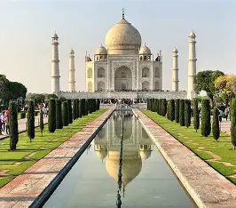
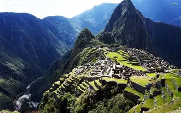
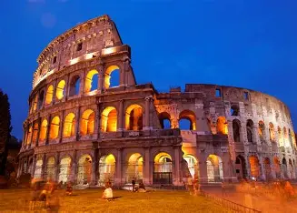

The Seven Wonders of the World are amazing places that are famous around the globe. These include the Great Pyramid of Giza, the Great Wall of China, and the Taj Mahal. They are special because they show how clever and skilled people can be. I would love to visit the Taj Mahal because it looks like a palace from a fairy tale. When people visit these wonders, they take care of them by not leaving trash and by being quiet and respectful. This helps keep the wonders beautiful for everyone to enjoy.
| Name | image | description |
|---|---|---|
| Great wall of china | |
The Great Wall of China is one of the most iconic structures in the world, recognized for its historical significance and architectural grandeur. It was constructed over several dynasties, primarily to defend against invasions from nomadic tribes and to control trade along the Silk Road. The wall's construction began as early as the 7th century BC, with significant expansions during the Qin Dynasty (221-206 BC) and the Ming Dynasty (1368-1644 AD), which is responsible for the most well-preserved sections we see today. |
| Taj mahal |  | The Taj Mahal, located in Agra, India, is a stunning white marble mausoleum built by Mughal Emperor Shah Jahan in memory of his beloved wife, Mumtaz Mahal. Constructed between 1632 and 1653, the Taj Mahal is renowned for its exquisite architecture and intricate craftsmanship. This iconic monument stands as a testament to love and is often referred to as one of the Seven Wonders of the World. The main structure features a large dome surrounded by four minarets, all adorned with beautiful inlay work of semi-precious stones. The gardens and reflecting pools that surround the Taj Mahal enhance its beauty, creating a serene atmosphere that attracts millions of visitors each year. Recognized as a UNESCO World Heritage Site, the Taj Mahal symbolizes the rich cultural heritage of India and the enduring love story of Shah Jahan and Mumtaz Mahal, making it a must-visit destination for travelers from around the globe. |
| Machu picchu |  | Machu Picchu, often referred to as the "Lost City of the Incas," is situated at an elevation of 2,430 meters (7,970 feet) above sea level, approximately 80 kilometers (50 miles) northwest of Cusco. Built around 1450 during the height of the Inca Empire, it is believed to have served as a royal estate for the Inca emperor Pachacuti. The site features remarkable dry-stone construction, with notable structures such as the Temple of the Sun and the Intihuatana ritual stone. Rediscovered in 1911 by American historian Hiram Bingham, Machu Picchu was designated a UNESCO World Heritage Site in 1983 and has since become one of the most visited tourist destinations in the world, attracting over 1.5 million visitors annually. Its intricate terraces and agricultural systems demonstrate the advanced engineering skills of the Inca civilization, making it a vital symbol of their cultural heritage. |
| Colosseum |  | The Colosseum, also known as the Flavian Amphitheatre, is a monumental structure located in the heart of Rome, Italy. Commissioned by Emperor Vespasian around A.D. 70-72 and completed in 80 A.D. by his son Titus, it is the largest ancient amphitheater still in existence and is renowned for its architectural innovation, featuring a complex system of vaults. The Colosseum was the site of numerous public spectacles, including gladiatorial contests, animal hunts, and mock naval battles, making it a central hub of entertainment in ancient Rome. Today, it stands as a symbol of Rome's historical grandeur and attracts millions of visitors each year. |